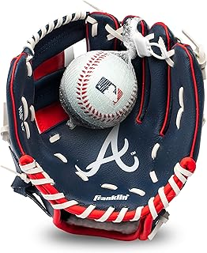
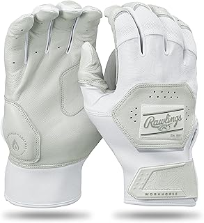
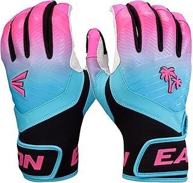
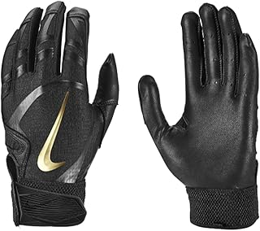
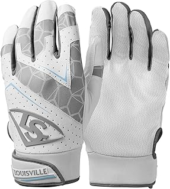

← bestbattinggloves.com
What We Look For in Battinggloves (Updated 2026)
May 2026
There's a reason battinggloves is trending right now. People want quality without overpaying, and 2026 delivers solid options at every price point.
What NOT to Do
- Blind brand loyalty — Your favorite brand might not make the best battinggloves. Stay open to better options.
- Trusting fake reviews — Look for reviews with photos and specific details. Generic praise is often planted.
- Skipping negative reviews — A 4.5-star product with durability complaints tells you more than a 5-star product with 8 reviews.
- Not measuring — "It looked bigger online" is the #1 return reason for battinggloves. Measure twice.
What the Pros Look For
- Build quality — Cheap battinggloves fall apart fast. Look for solid construction and quality materials.
- Dimensions matter — Read the actual measurements. "Large" means different things to different battinggloves manufacturers.
- Availability — In-stock with fast shipping beats a "better" product backordered for weeks.
- Brand track record — Established battinggloves brands have more to lose from bad products. That accountability matters.
- Material grade — Higher-grade materials in battinggloves last longer and perform better, even when designs look similar.
Insider Advice
- Between two options? Go with the one that has more reviews. Volume of feedback matters for battinggloves.
- Buying battinggloves as a gift? Pick something with easy exchanges. Preferences are personal.





Tried and Tested
⭐ 4.0 · $24.95
⭐ 5.0 · $59.99
⭐ 4.7 · $38.24
⭐ 4.4 · $45.99
⭐ 4.7 · $22.99
Our Take
We update our battinggloves reviews as new products launch. Bookmark bestbattinggloves.com for the latest.
Affiliate Disclosure: As an Amazon Associate, we earn from qualifying purchases. This doesn't affect our recommendations.